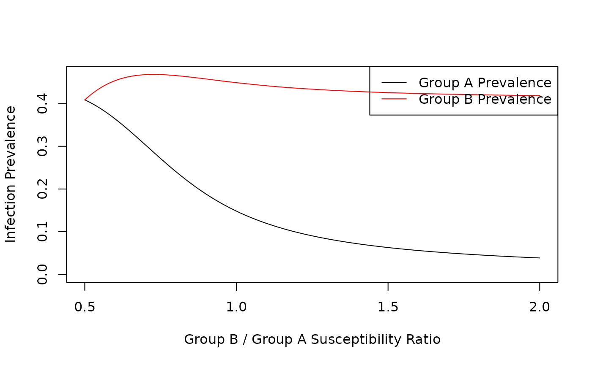

Sensitivity Analysis
sensitivity_analysis.RmdConsider a population with the following parameters:
Two sub-populations sized 80000 (A) and 20000 (B)
At time zero 20% of both A and B are vaccinated
R-Naught is 1.75, infected individuals take a week to recover.
With a contact ratio of 2, Group B makes twice as many contacts as group A.
75% of Group A’s contacts are within Group A. 50% of Group B’s contacts are within Group B
Susceptibility ratio varies from 0.5 to 2. At 0.5 Group A is twice as susceptible to infection as Group B. At 2, Group A is half as susceptible to infection as Group A.
index <- vector()
groupA <- vector()
groupB <- vector()
popA <- 80000
popB <- 20000
# For each
for (i in seq(0.5, 2, 0.01)) {
ret <- getFinalSize(vacTime = 0,
vacPortion = c(0.2, 0.2),
popSize = c(popA, popB),
R0 = 1.75,
recoveryRate = 1 / 7,
contactRatio = 2,
contactWithinGroup = c(0.75, 0.5),
suscRatio = i)
if (ret[1] > 1000) {
index <- c(index, i)
groupA <- c(groupA, ret[1] / popA)
groupB <- c(groupB, ret[2] / popB)
}
}
print(max(max(groupA), max(groupB)))
#> [1] 0.4683875
plot(index, groupA, type = "l", xlab = "Group B / Group A Susceptibility Ratio", ylab = "Infection Prevalence", ylim = c(0, max(max(groupA), max(groupB))))
lines(index, groupB, type = "l", col = "red")
legend("topright", legend = c("Group A Prevalence", "Group B Prevalence"), col = c("black", "red"), lty = 1)